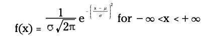
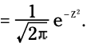
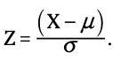

Using Z score in Probability
Understanding Normal distribution
Very common probability model used to describe many random phenomena.
bell-shaped, results mound up in middle, as we move away from the middle on either side, the values occur less often.
continuous distribution
differ in terms of its center -> mean and spread -> variance.
Saddle points places on curve where graph changes from concave down to concave up. Distance from mean is equal to the standard deviation.
probability density function (pdf)

- very complex to find the area under the curve between 2 points
- use z table to find find probabilities for any normal distribution
Standard Normal (Z) distribution
- Transform any normal distribution to standard normal distribution, basically it is the standard by which all other normal distribution are measured.
- Mean -> 0 and Standard deviation -> 1
- pdf 
Standard Scores (z scores / z values)
- Value on the z distribution that represents the number of standard deviations we are above or below the mean.
- z = 1 -> value is 1 sd above from mean, z = -1 -> value is 1 sd below the mean.
Changing from X units to Z units
2 Step process:
- Subtract the mean, to get the normal distribution centered at 0.
- Divide by the standard deviation to normalize.
- 
Steps for finding probabilities for a normal distribution :
Step 1: Translate into P(x<a), P(x>b) or P(a<x<b)
Step 2: Transform a, b into z values and lookup the value on the z table.
Step 3: If P(x<a) : use the value directly. If P(x>a) : use 1 - z value.
If P(a<x<b): find the z value for b and a. Then subtract the smallest one from the largest one.